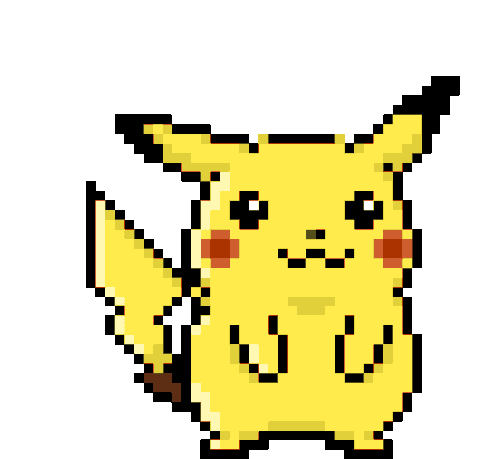
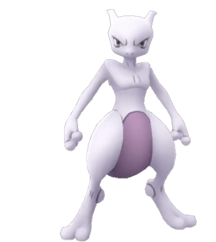

-
Picachu #001
- Choque
Quando está irritado, ele imediatamente descarrega a energia armazenada nas bolsas em suas bochechas.
-
Charmander #002

- Fogo
Tem preferência por coisas quentes. Quando chove, diz-se que o vapor jorra da ponta da cauda.
-
Charmeleon #003

- Fogo
Tem uma natureza bárbara. Em batalha, ele chicoteia sua cauda ardente e corta com garras afiadas.
-
Charizard #004

- Fogo
Ele cospe fogo que é quente o suficiente para derreter pedregulhos. Pode causar incêndios florestais ao soprar chamas.
-
Ivysaur #005

- Grama
- Veneno
Quando o bulbo em suas costas cresce grande, ele parece perder a capacidade de ficar em suas patas traseiras.
-
venusaur #006

- Grama
- Veneno
Quando o bulbo em suas costas cresce grande, ele parece perder a capacidade de ficar em suas patas traseiras.
-
Squirtle #007

- Água
Quando o bulbo em suas costas cresce grande, ele parece perder a capacidade de ficar em suas patas traseiras.
-
wartortle #008

- Água
Wartortle é um Pokémon do tipo água, que evolui a partir do Squirtle. Ele tem uma concha dura nas costas, que serve como proteção contra ataques inimigos. Além disso, ele é capaz de nadar em alta velocidade e usar jatos de água para atacar seus oponentes.
-
Blastoise #009

- Água
Blastoise tem bicos de água que se projetam de sua concha. Os bicos de água são muito precisos. Eles podem disparar balas de água com precisão suficiente para atingir latas vazias a uma distância de mais de 60 metros.
-
Mewtwo #010
- Psicótico
Seu DNA é quase o mesmo de Mew. No entanto, seu tamanho e disposição são muito diferentes.